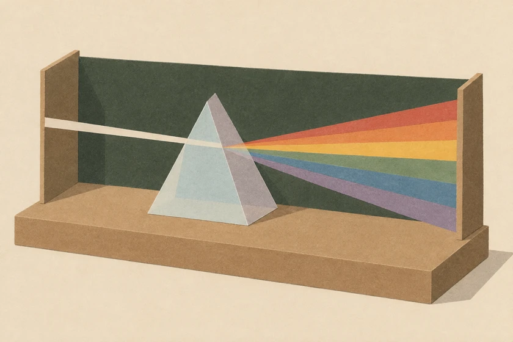

<!doctype html><html lang="en"><meta charset="utf-8"><meta name="viewport" content="width=device-width,initial-scale=1"><title>3 Wave Motion · DSE Physics Lab</title><script defer src="lab-nav.js"></script><link rel="stylesheet" href="topics.css"><main style="--accent:#a6bbce"><header><div><span class="tag">YD PHYSICS　/　03 / OP</span><h1>3 Wave Motion</h1><p lang="zh-HK">波動 · OP01–OP02 / WA</p></div></header><h2>OP01 · Reflection and Refraction<small lang="zh-HK">反射與折射</small></h2><a class="tool" href="pinhole-camera.html"><span>Pinhole Camera<small lang="zh-HK">針孔相機</small></span></a><a class="tool" href="laws-of-reflection.html"><span>Laws of Reflection<small lang="zh-HK">反射定律</small></span></a><a class="tool" href="mirror-image.html"><span>Mirror Image 1<small lang="zh-HK">平面鏡成像 1</small></span></a><a class="tool" href="mirror-rotation.html"><span>Mirror Rotation<small lang="zh-HK">旋轉平面鏡</small></span></a><a class="tool" href="mirror-image-2.html"><span>Mirror Image 2<small lang="zh-HK">平面鏡成像 2</small></span></a><a class="tool" href="snells-law.html"><span>Snell’s Law<small lang="zh-HK">斯涅爾定律</small></span></a><h2>Topic guide<small lang="zh-HK">課題索引</small></h2><ul><li><b>OP01</b><span>Reflection and Refraction<small lang="zh-HK">反射與折射</small></span></li><li><b>OP02</b><span>Lenses<small lang="zh-HK">透鏡</small></span></li><li><b>WA01</b><span>Wave Motion<small lang="zh-HK">波動</small></span></li><li><b>WA02</b><span>Wave Reflection and Refraction<small lang="zh-HK">波的反射與折射</small></span></li><li><b>WA02</b><span>Diffraction<small lang="zh-HK">衍射</small></span></li><li><b>WA03</b><span>Interference<small lang="zh-HK">干涉</small></span></li><li><b>WA04</b><span>Stationary Waves<small lang="zh-HK">駐波</small></span></li><li><b>WA06</b><span>Light Interference<small lang="zh-HK">光的干涉</small></span></li><li><b>WA06</b><span>EM Spectrum<small lang="zh-HK">電磁波譜</small></span></li><li><b>WA07</b><span>Longitudinal Waves<small lang="zh-HK">縱波</small></span></li><li><b>WA08</b><span>Sound Waves<small lang="zh-HK">聲波</small></span></li></ul><footer>Designed by Mr. Lai Ka Chun (LKU) · CPCYDSS</footer></main></html>